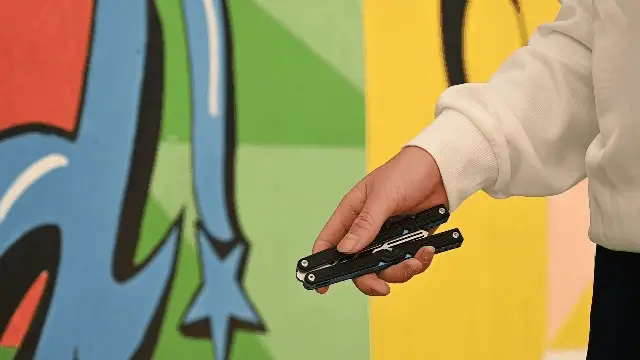
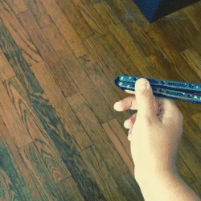

Skill levels
beginner balisong flippers normaly cant chain tricks togeather and can't do tricks that require good timing or precice finger control.
beginner tricks you should start with. doubble roll out, chaplin, and fan.
Intermediate flippers start to combine tricks into smooth combos. They also start to understand more how balisongs move in the hand and can start to create their own style of flipping and begin to learn tricks faster due to their greater understanding.
intermediate tricks you should learn. choker fan, heilex arial, behind the eight ball.
Advanced flippers how their own recognizable flipping style, like someones hand writing. They understand fully how to controll a balisong an d can come up with their own new tricks and can learn new tricks very quicky due to a great understanding, for an example a beginer may take up to a day to laern a new beginer trick, an advanced fliper can learn an intermediate trick in less than an hour.

Advanced tricks to learn, giraff, wrist bump, back hand fan.